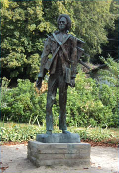
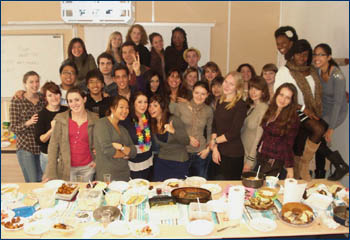
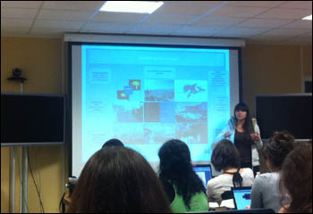

|
Как
известно, между факультетом международных отношений нашего университета
и факультетом туризма университета Marne-la-vallee (Франция) существует
программа сотрудничества, которая предусматривает прохождение обучения
французских и русских студентов на соответствующих факультетах.
Сложно
описать учебу во Франции в нескольких словах. В первую очередь хочется
отметить разницу в манере преподавания. Она заключается в том, что
занятия проводятся в более свободной форме – студенты задают много
вопросов, происходит общение, чувствуется их заинтересованность
в обучении. Преподаватели, со своей стороны, относятся к студентам
как к коллегам, будущим профессионалам в той же области деятельности,
что также мотивирует студентов.
Кроме того, учебный план насыщен интересными заданиями, приближенными
к реальной жизни; предусмотрены экскурсии; посещение профессиональных
салонов и конференций. Так, в 2008–2009 учебном году мы побывали
в Нормандии (экскурсия по отелям г. Le Havre), посетили
туристические зоны г. Bierritz, готовили стенд для международной
организации MPI для салона Bedouk, участвовали в конференции MPI
в Страсбурге, посетили Европейский парламент и др.
Конечно,
находясь в Париже, очень трудно сосредоточиться на учебе…
Студенческое общежитие университета находится в получасе пути
на метро от центра города, поэтому практически каждый день мы гуляли
по набережным Сены, ходили в знаменитые музеи, соборы. По вечерам
– театры, кино, концерты, бары, ночные клубы.
Хотя занятия в университете занимают практически целый день, возможность
встретиться с друзьями находится всегда!
Мне посчастливилось жить в одном общежитии со студентами Erasmus,
приехавшими из разных стран Европы. Было очень интересно общаться
с ними, узнавать о разных традициях, культурах, особенно во время
тематических вечеров, которые мы часто устраивали в общежитии.
Конечно, мы очень сблизились, и было грустно уезжать… но друзья,
знания и жизненный опыт, приобретенные во Франции, очень ценны и
никогда не забудутся!
Кильдюшевская Олеся, студентка ФМО
С 15 сентября по 16 декабря 2011 года я проходила обучение в Университете Пари-Эст Марн-ля-Валле, Франция, по программе двойного диплома на специальности Менеджмент туризма, специализация Туризм высшего класса и класса люкс. В ходе второго года программы я изучила различные дисциплины, связанные с менеджментом и маркетингом в туристской деятельности, такие как Стратегии туроперейтинга (Stratégies du tour operating), Основы коммерческой деятельности и средства дистрибуции на рынке туризма (Plan d’action commerciale, réseaux de distribution et mise en marché), Предложения и структуры в отельной деятельности, (Prestations et structures hôtelières), Цели и ожидания клиентов в туризме (Attente et objectifs des clientèles) и др.
Структура учебной программы способствует практической интеграции в сферу будущей деятельности. Многие преподаватели в университете Пари-Эст Марн-ля-Вале являются практикующими специалистами, что позволило мне ознакомиться с текущей ситуацией на рынке международного туризма, изучить современные механизмы менеджмента и маркетинга в сфере путешествий. В ходе практических занятий мы посетили офисы агенств туроператоров Asia и Voyageur du monde, специализирующихся на организации туризма класса люкс, отель категории Palace Fouquet’s Barriere в Париже.
Каждый год университет организует учебную поездку в европейскую страну с богатыми туристскими традициями, где студенты получают возможность побеседовать со специалистами, посетить важнейшие мероприятия туриндустрии, ознакомиться с различными организациями туристического бизнеса. В этом году для учебной поездки был выбран Лондон – столица страны с богатыми культурными и историческими традициями, которая каждый год принимает большое число туристов.
Следуя программе, мы посетили один из крупнейших Туристических салонов – World Travel Market 2011, где получили возможность побеседовать с работодателями, заинтересованными в наборе студентов нашей специальности, а также встретились со специалистами Отельного бизнеса, PR-компании, занимающейся рекламой и распространением продуктов туриндустрии. Поскольку наша специализация ориентирована, прежде всего, на туризм высшего класса и класса люкс, мы посетили несколько отелей категории Palace, одним из которых являлся отель The Connaught, где нам рассказали об организации гостеприимства для гостей, предпочитающих персонализированную систему обслуживания высшего класса, об организации работы персонала, провели экскурсию по отелю.
Все студенты, участвующие в программе двойного диплома, проходят обучение наравне с франкоговорящими студентами, выполняют совместные задания, участвуют во всех мероприятиях университета. В начале учебы мы практически сразу влились в нашу группу, познакомились со студентами и преподавателями, что позволило лучше организовать учебный процесс на втором году обучения, который предполагает большое количество групповых проектов, презентаций и выступлений с докладами. Следует сказать, что и однокурсники и преподаватели всегда готовы помочь иностранным студентам в любых вопросах, всегда идут навстречу, чтобы дать им возможность лучше понять и усвоить материал занятий, помогают при подготовке заданий. К тому же организуются различные встречи и мероприятия вне стен университета. Все это способствует быстрой и легкой интеграции, хорошему настроению и желанию учиться.
Данная поездка дала мне возможность улучшить мои лингвистические навыки, получить без преувеличения огромный багаж знаний и навыков в сфере туризма, изучить культуру и особенности различных стран Европы, встретить большое количество интересных людей, профессионалов своего дела, установить контакты с нынешними и будущими специалистами международной туристической индустрии.
Программа двойного диплома, курируемая Региональным Центром французского языка в г. Воронеже, – хорошая возможность для обучения за границей для студентов, изучающих французский язык (все остальные программы ориентированы прежде всего на изучающих английский). По моему мнению, подобные международные программы Воронежского государственного университета необходимы, должны развиваться и привлекать как можно больше студентов, так как они способствуют наиболее разностороннему и полному образованию и получению большего багажа знаний при выходе из университета.
И.И. Гребенкина, студентка ФМО
Осенью 2011 года в рамках программы двойного диплома группа из 5 студентов ВГУ направилась изучать менеджмент туризма во Францию. Нам была дана замечательная возможность пройти обучение в течение одного семестра в магистратуре университета Пари-эст Марн-ля-Валле. Я и не подозревала насколько увлекательной и запоминающейся станет эта поездка. Но обо всем по порядку.
Сразу после прибытия меня поселили в общежитие, расположенное в коммуне Лонь в 20 минутах езды от Университета (коммуна – это административно-территориальная единица, самый нижний структурный уровень страны). Условия проживания были очень хорошими, можно сказать, что проживала в собственной квартире. Сама Лонь представляет собой уютный живописный городок с пятью очаровательными озерами. Интересно, что около 40% ее населения составляют выходцы из Восточной Азии, за что ее и окрестили «первым азиатским городом» Франции.
Обучение началось с посещения осенних курсов французского языка, которые продолжались две недели. Участие студентов со всех уголков мира (Турции, Италии, Венгрии, Германии, Испании, Румынии), сделало обучение еще более интересным и запоминающимся. График был очень насыщенным. Дообеденное время было посвящено изучению языка: дискуссии, просмотр фильмов на французском. После совместного ланча мы отправлялись на экскурсии, которые оставили массу ярких впечатлений.
Так, мы посетили городок Овер-сюр-Уаз, история которого тесно связана с именами ряда выдающихся художников, таких как Сезанн, Писарро. Но наибольшую славу принесли Овер-сюр-Уаз полотна Ван Гога, который провел здесь два своих последних месяца жизни.
Здесь же расположен и уникальный Музей абсента, в свое время культового напитка представителей художественной богемы. И особенно мне запомнился замок Овер-сюр-Уаз (Chateaux Auvers-sur-Oise), где для нас провели экскурсию-спектакль «Путешествие во времена импрессионистов». Это было действительно настоящим путешествием в прошлое, ставшее возможным с помощью спецэффектов, голосов и песен, звуков Парижа, музыки того времени и проекции более 500 картин импрессионистов.
Организаторы курсов подготовили для нас также посещение студенческого квартала в Париже – Сорбонну, знаменитого холма Монмартр с базиликой Сакре-Кёр, шато Во-ле-Виконт, предвосхитившего ансамбль Версаля.
Завершились осенние курсы чудесной прогулкой на кораблике «Mouche» по реке Сене. А результат двухнедельного обучения был таков: усовершенствованные языковые знания, приобщение к французской культуре, и, конечно же, уйма иностранных друзей.
В Университете занятия начались в середине сентября. Группа оказалась очень дружной. С самого начала легко удалось найти общий язык с одногруппниками. Ребята относились к нам, студентам-иностранцам, понимающе и всегда готовы были помочь, подсказать.
Лекции на французском сначала прослушивать было непросто, но благодаря поддержке одногруппников, пониманию преподавателей мы преодолели эту трудность. Кроме того, лекции оказались очень увлекательными. А так как наши преподаватели являются профессионалами в сфере туризма, информацию мы получали «из первых уст».
Что касается обучения в целом, хочу отметить, что оно отличается от российского. Задания здесь больше приближены к практике, приветствуется креативность, творческий подход. Часто работа осуществлялась в группах, а не индивидуально, что помогло развить умение работать в команде, а также дало возможность больше общаться с ребятами на французском языке. Сами задания были очень интересными, и выполняли мы их с большим удовольствием и энтузиазмом. Так, например, нам необходимо было составить детальный проект по организации мероприятия, посвященного юбилейной дате – 10-ю вхождения Франции в зону Евро. А по предмету «Основы туризма» мы должны были посетить 5 турагентств под видом «client mystère» (от фр. «таинственный клиент»), придумав себе легенду. Тем самым нам была предоставлена возможность познакомиться с деятельностью турагентств на практике, оценить работу их сотрудников. Нам, будущим профессионалам в сфере туризма, задание позволило приобрести ценные знания и опыт.
Стоит упомянуть также и профессиональные экскурсии, которые были, на мой взгляд, одним из самых интересных и результативных способов обучения. В течение семестра было организовано несколько таких мероприятий. Так, например, мы посетили замок, принадлежащий сети отелей «Chateauform». Это группа замков-отелей, называемых «дома семинаров», предназначена только для представителей бизнеса. Здесь предоставлена возможность организовывать деловые встречи, конференции, а также в неформальной уютной обстановке наладить профессиональные контакты, сплотить рабочий коллектив.
Отдельного внимания заслуживает наша поездка в Ле Туке (регион Нор-па-де-Кале). Расположенная на берегу Ла-Манша, коммуна Ле Туке получила название «Париж на море», она славится своими курортами северной Франции и роскошными отелями. Поездка стала для меня поистине настоящим приключением. Нашей целью было ознакомление с работой сотрудников сферы отельного бизнеса и делового туризма. На два дня была запланирована целая плеяда мероприятий как учебного, так и культурного характера. Мы посетили несколько отелей класса “люкс”, где нам была дана возможность пообщаться с их менеджерами, задать интересующие вопросы и получить ряд полезных советов от профессионалов. Также был организован визит во «Дворец конгрессов», где проводятся крупные встречи представителей делового мира ряда европейских государств. Особенно запомнился мне званый ужин с мэром Туке в здании городской ратуши. Для нас также были подготовлены культурные мероприятия: ознакомительная экскурсия на велосипедах по коммуне Ле Туке, прогулка по набережной, посещение океанариума и природного заповедника, а также ужин в уютном аутентичном ресторане «Auberge», где нам посчастливилось отведать французскую кухню.
Как говорят французы, нужно уметь «profiter de la vie», то есть наслаждаться жизнью и стремиться наполнить ее массой ярких событий. Вот и я старалась следовать этому принципу. Поэтому моя студенческая жизнь в Париже была насыщена не только учебой, она сопровождалась и посещением достопримечательностей французской столицы, ее окрестностей, прогулками по набережной Сены, чтобы полностью окунуться в атмосферу романтики, которой славится Париж.
Мне удалось посетить ряд интереснейших музеев и выставок Парижа: Лувр, Центр современного искусства Жоржа Помпиду, музей изобразительных и прикладных искусств д'Орсе, музей французского художника-символиста Гюстава Моро, Музей Романтической жизни и множество других.
Запомнился мне визит в дворцово-парковый ансамбль Версаль, бывшую резиденцию французских королей, а также в замок Шантий, который славится своими чудесными парками и одним из богатейших музеев Франции – Конде.
А тут еще и Дисней в 25 минутах езды на Рэр (это французская электричка) от общежития. Разумеется, невозможно было удержаться от посещения этой «детской мечты».
И, конечно же, удалось увидеть воочию символ Франции – Эйфелеву башню.
А чтобы активнее практиковать разговорный язык, мы старались посещать студенческие вечеринки, парижские клубы, которые за свою переполненность и тесноту получили среди французской молодежи название «буат», то есть коробка. Кстати, для студентов Парижа действуют хорошие скидки (50%, а то и 100%) на посещение культурных мест, парков и т.д., поэтому удавалось неплохо сэкономить.
Вот такими были четыре месяца, проведенные мною во Франции, ставшие одними из самых ярких моментов моей жизни, настоящим приключением. Я с нетерпением жду моего возвращения в Париж, где меня ждут второй год обучения в магистратуре и множество новых впечатлений…
Надежда Булгакова, студентка ФМО
Я, Неверова Дарья Александровна, студентка 5 курса Воронежского Государственного Университета, факультета международных отношений, в период с 3 сентября по 30 января проходила обучение во Франции, в университете Пари-Эст-Марн-Ля-Валле, город Париж, по программе соглашения между Воронежским Государственным Университетом и университетом Пари-Эст-Марн-Ля-Валле о двойном дипломе факультета международных отношений и магистратуры по специальности инженеринг международного туризма.
В рамках программы включенного обучения нам прочитали курс лекций по менеджменту и маркетингу международного туризма. Форма обучения в данном учебном заведении значительно отличается от формы обучения в нашем российском ВУЗе. Обучение проходит на интерактивной основе, по окончании курса лекций студенты обязаны сдать экзамен по соответствующей дисциплине в письменной форме, в форме теста или в форме презентации на мультимедийной основе. Каждый проект должен быть сдан с учетом установленных сроков и соблюдением регламента, на оценку не менее 12 баллов. В программу обучения входят такие дисциплины как менеджмент качества, туристические коммуникации, туризм люкс и деловой туризм, статистика, территориальная динамика, управление финансами, право туристической деятельности и так далее. Кроме того мы посещали курсы английского языка в сфере профессиональной деятельности с носителем языка и курсы французского языка на уровень B2.

13 декабря для нашего курса устраивался день интеграции. В этом году он происходил в парках Диснейленда. Этот день начался с конференции в медиатеке Валь д’Эроп, где для нас была подготовлена презентация о будущих проектов, подготовленных для Валь д’Эроп и коммунны Марн-Ля-Валле. После презентации, докладчики любезно ответили на все интересующие нас вопросы строительства в данной коммунне. Первый день мы посещали парк с его всемирно известными экстремальными аттракционами и Студию Дисней, а также вечером для нас был устроен обед с преподавателями нашего университета. нас поселили в отель Нью Порт Бай Клаб, отель класса 3 звезды, известный по всему миру. На следующий день персонал отелей Диснейленда устроил для нас презентацию отелей – Нью Порт Бай Клаб, Диснейленд Отель и отель Нью-Йорк. Нам показали основные номера этих отелей, а также президентские номера, где в свое время останавливались знаменитости из различных стран и даже бывший президент Французской Республики Николя Саркози со своей женой Карлой Бруни. В ходе данных экскурсий мы подчерпнули для себя очень много интересных фактов, ближе ознакомились с инфраструктурой и работой отелей и Парков Диснейленда, а также замечательно провели время на аттракционах.
В начале нашего пребывания во Франции мы прошли 2 недели подготовительных курсов французского языка для иностранных туристов. В рамках данных курсов координаторы проекта преподавали нам практические навыки необходимые для жизни во Франции, а также проводили ознакомительные экскурсии по достопримечательностям Парижа и рассказывали исторические факты Франции. Мы посетили такие места как Эйфелева башня, символ Парижа и Франции в целом, музей Лувр с его шедеврами мирового искусства, площадь Сакре Кёр, Монмартр, знаменитый Латинский квартал, где в основном проживают французские и иностранные студенты и многое другое. Помимо этого, мы самостоятельно устраиваали экскурсии по достопримечательностям Парижа и его музеям, к примеру музей Д’Орсей, музей военного искусства, музей Родэн, центр Жорж Помпиду и так далее.
Кроме всего этого, мы совершили частный визит в Нормандию, где посетили города Онфлёр и Довиль.
В заключение я могу сказать, что мы очень насыщенно провели полгода во Франции, приобрели обширные знания в области инженеринга международного туризма, расширили свой кругозор, получили массу впечатлений от общения с французскими и иностранными студентами Эрасмус, приобрели полезный опыт жизни за границей, а также повысили свой культурный уровень, посещая исторические памятники Франции и знакомясь с бытом и обычаями этой страны и, безусловно улучшили свой уровень разговорного и профессионального французского языка. По окончании нашей учебы в университете Пари-Эст-Марн-Ля-Валле мы получили сертификат о получении уровня Мастер 1 по специальности инженеринг международного туризма и выписку с оценками за первый семестр.
Безусловно, это потрясающий опыт, особенно для нас, как для студентов факультета международных отношений и мы с нетерпением ожидаем возвращения во Францию для прохождения второго года обучения на уровень Мастер 2. В данный момент я планирую закончить обучение на факультете международных отношений, в то же время пройти практику в туристическом агентстве или отеле. Я уверена, что программа обмена между Воронежским Государственным Университетом и Университетом Пари-Эст-Марн-Ля-Валле это замечательный опыт и считаю, что двойной диплом в сфере международных отношений и международного туризма поможет мне построить карьеру в сфере туризма и гостиничного бизнеса, так, как я бы хотела связать свою жизнь с данной областью.
Дарья Неверова, студентка ФМО
Я, Кузнецова Кристина Владимировна, студентка 5 курса факультета международных отношений Воронежского Государственного университета, в период с 3 сентября по 30 января проходила обучение во Франции, в университете Пари-Эст Марн-ля-Валле, город Париж, по программе межвузовского сотрудничества между Воронежским Государственным университетов и университетом Пари-Эст Марн-ла-Валле согласно контракту о двойном дипломе инжиниринга туризма (Мастер 1 и Мастер 2). Эта программа предоставляется студентам Воронежского Государственного университета, желающим одновременно получить французский диплом магистратуры «Инжиниринг международного туризма» и российский диплом. Для получения французского диплома студентам необходимо провести не менее двух семестров в университете Пари-Эст Марн-ля-Валле и по окончании – защита диплома на французском языке.
Я проходила обучение в первом семестре 2012–2013 учебного года. Перед началом обучения мы посещали 2х-недельные курсы французского языка, которые позволили нам ассимилироваться в новую культуру и улучшить уровень языка. Занятия проходили в главном корпусе университета Пари-Эст Марн-ля-Валле, там же находится международный отдел по работе с иностранными студентами, где можно было уточнить вопросы, касающиеся обучения, жилья и другие бытовые проблемы. В рамках курсов также мы посетили некоторые культурные достопримечательности Франции. Благодаря этим занятия мы чувствовали себя увереннее перед началом основного обучения.
Обучение в университете Пари-Эст Марн-ля-Валле длится 2 года с прохождением практики в туристических агентствах, отелях и других учреждениях туристического направления в России или во Франции. В первый год обучения мы получаем базовые и фундаментальные знания о туристическом секторе, знакомимся с основами туризма. Второй год специализирован на отрасли, которую выбирают студенты: по окончании первого года им предоставляется возможность выбрать одну из двух специализаций: Деловой туризм (Tourisme d'affaire) или Элитный туризм (Tourisme et Hôtellerie Haut de Gamme).

В рамках обучения мы прошли курс лекций, касающихся туризма, такие как:
- управление финансами,
- статистика,
- менеджмент качества,
- английский язык,
- французский язык,
- этика,
- гостиничное управление,
- основы туризма,
- общение с туристами,
- туристические виды транспорта,
- аудит.
В течение обучения мы изучаем нормативно-правовую базу, организацию деятельности туристических фирм, развивали навыки профессионально планировать и организовывать туры и экскурсии, разбираться в специфике ценообразования и страхования в туристическом бизнесе, а также познакомились с информационными технологиями, применяемыми в туризме.
Можно отметить, что в течение нашего обучения мы в основном выполняли практические задания в виде презентаций, устных выступлений, составления анкет и письменных отчетов. По окончании определенного курса лекций мы сдавали экзамены в одной из таких форм.
Также, помимо этого, у нашей группы были Дни объединения в середине декабря. Наша группа во время Дня Интеграции провела пару дней в Диснейленде, где мы не только смогли больше сплотиться, но и также узнать систему работы этого парка и отелей на его территории. Мы посетили отели разных категорий, смогли изучить структуру их работы, условия обслуживания и выявили их различия.
У меня возникло желание изучать туристическую отрасль в университете Пари-Эст Марн-ля-Валле, так как в настоящий момент туризм является одним из ведущих отраслей мировой экономики, а профессия менеджера по туризму и гостиничному хозяйству очень востребована. Туризм во Франции – это сектор развитый и динамичный, каждый год ее посещают тысячи туристов. В этой стране насчитывается огромное количество специализированных организаций, туристических агентств и отелей.
Благодаря межвузовскому сотрудничеству предоставляется огромная возможность получения двойного диплома, но помимо этого практика и изучение французского языка, внедрение в культуру и туристическую деятельность. Соответственно для меня, поехать учиться во Францию, это огромная возможность получить знания и опыт в этой стране, что в дальнейшем позволит мне работать в туристической отрасли, так как университет предоставляет возможность изучить основы туризма и получить практические навыки в туристическом бизнесе, которые можно будет применить в своей будущей профессии.
Кристина Кузнецова, студентка ФМО
|